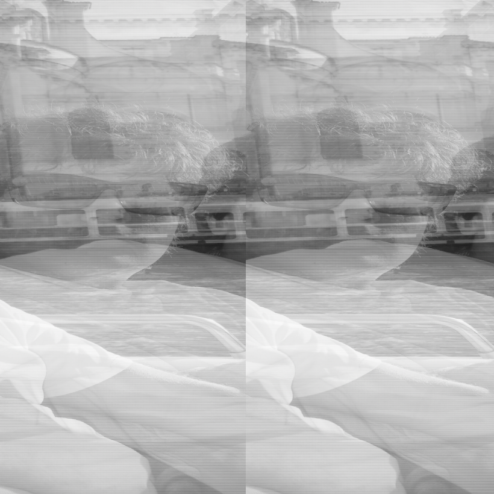
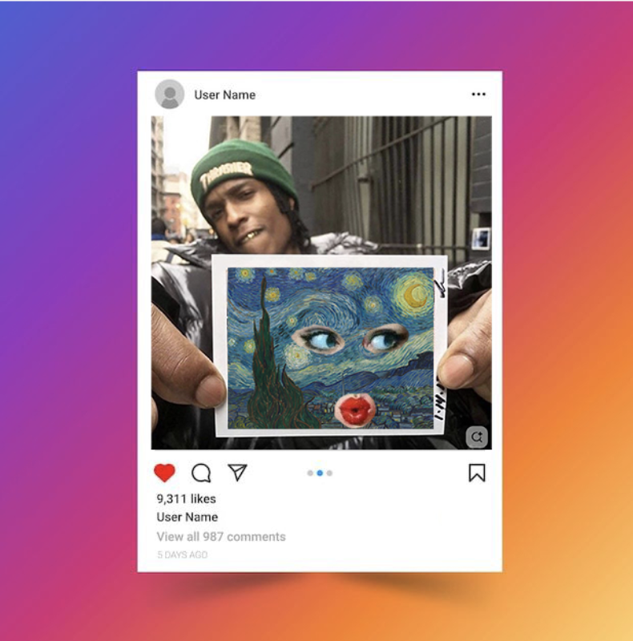
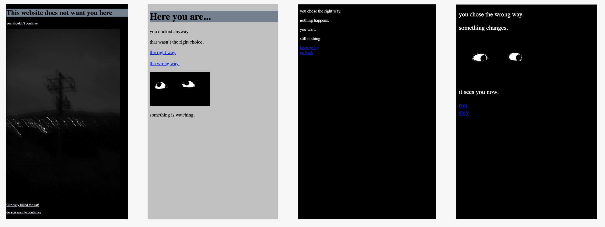
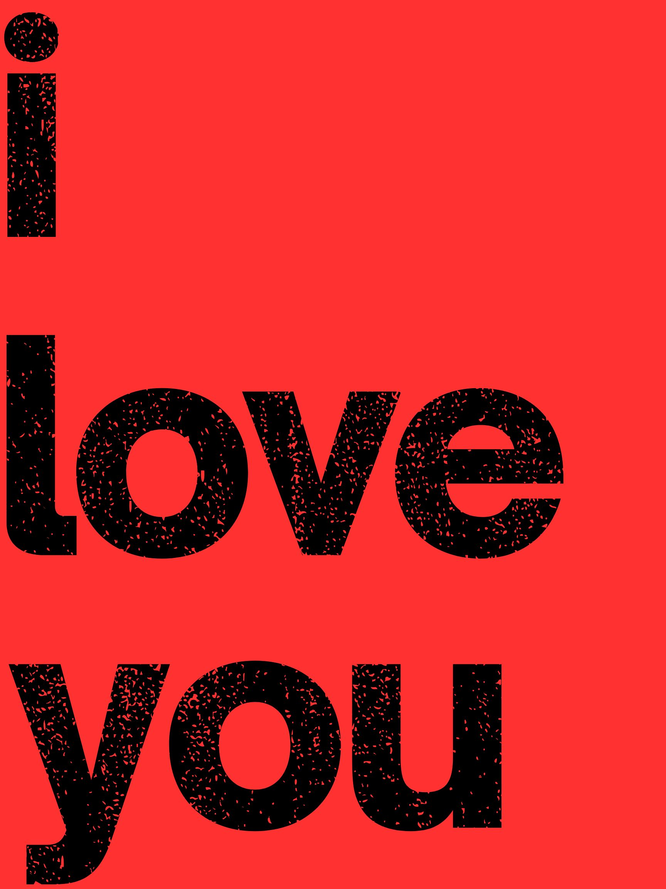

ART 74

Glitch Portrait
This project uses a glitched image of my brother to explore distortion, fragmentation, and the instability of digital images. By manipulating the original photograph, I was interested in how glitch can transform a personal image and create a fragmented visual experience.

Untitled Meme Study
This meme mashup combines internet aesthetics, celebrity imagery, and art historical references through the format of a fake Instagram post. I was interested in remix culture and how images circulate online through humor and recognition.
Aperitivo
Aperitivo is a time-based video mashup made through editing, repetition, and montage. The project explores atmosphere, nightlife, rhythm, and cinematic pacing using appropriated footage.

This Website Doesn’t Want You Here
This interactive hypertext project explores curiosity, discomfort, and nonlinear navigation through branching webpages. The viewer moves through increasingly strange and unsettling spaces through links and choices.
view project
I Love You
I Love You is an interactive hypertext artwork that explores memory, intimacy, and emotional distortion through a click-through web experience. The project guides viewers through a sequence of fragmented images, red screens, glitched visuals, and personal photographs that slowly shift in tone over time. By requiring the user to continuously click forward, the work creates a feeling of anticipation and emotional buildup. Similar to scrolling through digital memories or searching for meaning in repeated phrases. Using HTML, CSS, and JavaScript, the project transforms a simple webpage into an unstable emotional environment that reflects the overwhelming and layered nature of love.
enter project